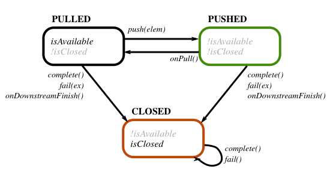
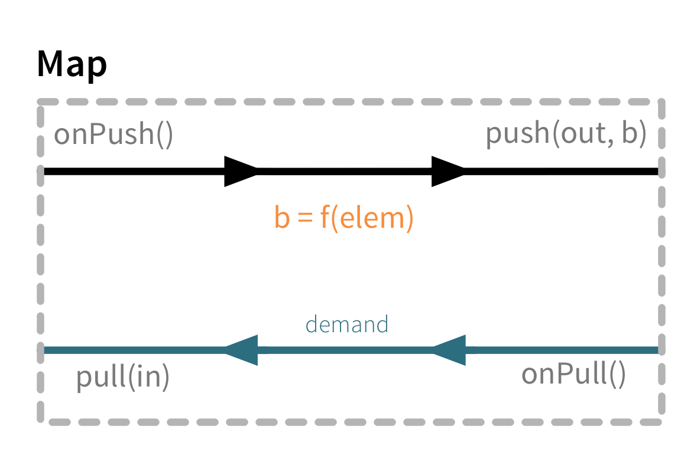
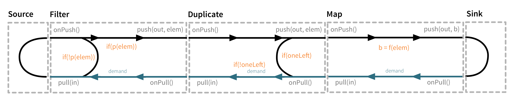
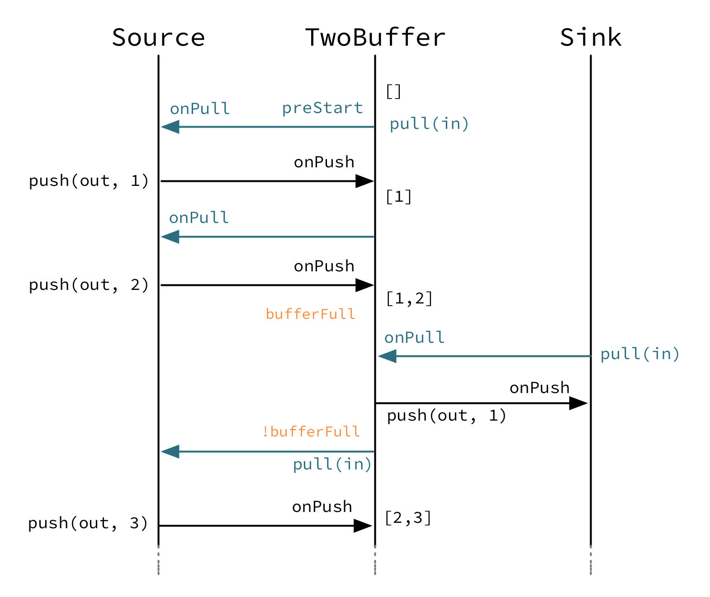

Custom stream processing
Dependency
To use Akka Streams, add the module to your project:
- sbt
libraryDependencies += "com.typesafe.akka" %% "akka-stream" % "2.5-SNAPSHOT"- Maven
<dependency> <groupId>com.typesafe.akka</groupId> <artifactId>akka-stream_2.12</artifactId> <version>2.5-SNAPSHOT</version> </dependency>- Gradle
dependencies { compile group: 'com.typesafe.akka', name: 'akka-stream_2.12', version: '2.5-SNAPSHOT' }
Introduction
While the processing vocabulary of Akka Streams is quite rich (see the Streams Cookbook for examples) it is sometimes necessary to define new transformation operators either because some functionality is missing from the stock operations, or for performance reasons. In this part we show how to build custom operators and graph junctions of various kinds.
A custom operator should not be the first tool you reach for, defining operators using flows and the graph DSL is in general easier and does to a larger extent protect you from mistakes that might be easy to make with a custom GraphStage
Custom processing with GraphStage
The GraphStage abstraction can be used to create arbitrary operators with any number of input or output ports. It is a counterpart of the GraphDSL.create() method which creates new stream processing operators by composing others. Where GraphStage differs is that it creates an operator that is itself not divisible into smaller ones, and allows state to be maintained inside it in a safe way.
As a first motivating example, we will build a new Source that will emit numbers from 1 until it is cancelled. To start, we need to define the “interface” of our operator, which is called shape in Akka Streams terminology (this is explained in more detail in the section Modularity, Composition and Hierarchy). This is how this looks like:
- Scala
-
import akka.stream.SourceShape import akka.stream.stage.GraphStage class NumbersSource extends GraphStage[SourceShape[Int]] { // Define the (sole) output port of this stage val out: Outlet[Int] = Outlet("NumbersSource") // Define the shape of this stage, which is SourceShape with the port we defined above override val shape: SourceShape[Int] = SourceShape(out) // This is where the actual (possibly stateful) logic will live override def createLogic(inheritedAttributes: Attributes): GraphStageLogic = ??? } - Java
-
public class NumbersSource extends GraphStage<SourceShape<Integer>> { // Define the (sole) output port of this stage public final Outlet<Integer> out = Outlet.create("NumbersSource.out"); // Define the shape of this stage, which is SourceShape with the port we defined above private final SourceShape<Integer> shape = SourceShape.of(out); @Override public SourceShape<Integer> shape() { return shape; } // This is where the actual (possibly stateful) logic is created @Override public GraphStageLogic createLogic(Attributes inheritedAttributes) { return new GraphStageLogic(shape()) { // All state MUST be inside the GraphStageLogic, // never inside the enclosing GraphStage. // This state is safe to access and modify from all the // callbacks that are provided by GraphStageLogic and the // registered handlers. private int counter = 1; { setHandler( out, new AbstractOutHandler() { @Override public void onPull() throws Exception { push(out, counter); counter += 1; } }); } }; } }
As you see, in itself the GraphStage only defines the ports of this operator and a shape that contains the ports. It also has, a currently unimplemented method called createLogic. If you recall, operators are reusable in multiple materializations, each resulting in a different executing entity. In the case of GraphStage the actual running logic is modeled as an instance of a GraphStageLogic which will be created by the materializer by calling the createLogic method. In other words, all we need to do is to create a suitable logic that will emit the numbers we want.
It is very important to keep the GraphStage object itself immutable and reusable. All mutable state needs to be confined to the GraphStageLogic that is created for every materialization.
In order to emit from a Source in a backpressured stream one needs first to have demand from downstream. To receive the necessary events one needs to register a subclass of OutHandler AbstractOutHandler with the output port (Outlet). This handler will receive events related to the lifecycle of the port. In our case we need to override onPull() which indicates that we are free to emit a single element. There is another callback, onDownstreamFinish() which is called if the downstream cancelled. Since the default behavior of that callback is to stop the operator, we don’t need to override it. In the onPull callback we will emit the next number. This is how it looks like in the end:
- Scala
-
import akka.stream.Attributes import akka.stream.Outlet import akka.stream.SourceShape import akka.stream.stage.GraphStage import akka.stream.stage.GraphStageLogic import akka.stream.stage.OutHandler class NumbersSource extends GraphStage[SourceShape[Int]] { val out: Outlet[Int] = Outlet("NumbersSource") override val shape: SourceShape[Int] = SourceShape(out) override def createLogic(inheritedAttributes: Attributes): GraphStageLogic = new GraphStageLogic(shape) { // All state MUST be inside the GraphStageLogic, // never inside the enclosing GraphStage. // This state is safe to access and modify from all the // callbacks that are provided by GraphStageLogic and the // registered handlers. private var counter = 1 setHandler(out, new OutHandler { override def onPull(): Unit = { push(out, counter) counter += 1 } }) } }
Instances of the above GraphStage are subclasses of Graph[SourceShape[Int],NotUsed] Graph<SourceShape<Integer>,NotUsed> which means that they are already usable in many situations, but do not provide the DSL methods we usually have for other Source s. In order to convert this Graph to a proper Source we need to wrap it using Source.fromGraph (see Modularity, Composition and Hierarchy for more details about operators and DSLs). Now we can use the source as any other built-in one:
- Scala
-
// A GraphStage is a proper Graph, just like what GraphDSL.create would return val sourceGraph: Graph[SourceShape[Int], NotUsed] = new NumbersSource // Create a Source from the Graph to access the DSL val mySource: Source[Int, NotUsed] = Source.fromGraph(sourceGraph) // Returns 55 val result1: Future[Int] = mySource.take(10).runFold(0)(_ + _) // The source is reusable. This returns 5050 val result2: Future[Int] = mySource.take(100).runFold(0)(_ + _) - Java
-
// A GraphStage is a proper Graph, just like what GraphDSL.create would return Graph<SourceShape<Integer>, NotUsed> sourceGraph = new NumbersSource(); // Create a Source from the Graph to access the DSL Source<Integer, NotUsed> mySource = Source.fromGraph(sourceGraph); // Returns 55 CompletionStage<Integer> result1 = mySource.take(10).runFold(0, (sum, next) -> sum + next, mat); // The source is reusable. This returns 5050 CompletionStage<Integer> result2 = mySource.take(100).runFold(0, (sum, next) -> sum + next, mat);
Similarly, to create a custom Sink one can register a subclass InHandler with the operator Inlet. The onPush() callback is used to signal the handler a new element has been pushed to the operator, and can hence be grabbed and used. onPush() can be overridden to provide custom behavior. Please note, most Sinks would need to request upstream elements as soon as they are created: this can be done by calling pull(inlet) in the preStart() callback.
- Scala
-
import akka.stream.Attributes import akka.stream.Inlet import akka.stream.SinkShape import akka.stream.stage.GraphStage import akka.stream.stage.GraphStageLogic import akka.stream.stage.InHandler class StdoutSink extends GraphStage[SinkShape[Int]] { val in: Inlet[Int] = Inlet("StdoutSink") override val shape: SinkShape[Int] = SinkShape(in) override def createLogic(inheritedAttributes: Attributes): GraphStageLogic = new GraphStageLogic(shape) { // This requests one element at the Sink startup. override def preStart(): Unit = pull(in) setHandler(in, new InHandler { override def onPush(): Unit = { println(grab(in)) pull(in) } }) } } - Java
-
public class StdoutSink extends GraphStage<SinkShape<Integer>> { public final Inlet<Integer> in = Inlet.create("StdoutSink.in"); private final SinkShape<Integer> shape = SinkShape.of(in); @Override public SinkShape<Integer> shape() { return shape; } @Override public GraphStageLogic createLogic(Attributes inheritedAttributes) { return new GraphStageLogic(shape()) { // This requests one element at the Sink startup. @Override public void preStart() { pull(in); } { setHandler( in, new AbstractInHandler() { @Override public void onPush() throws Exception { Integer element = grab(in); System.out.println(element); pull(in); } }); } }; } }
Port states, InHandler AbstractInHandler and OutHandler AbstractOutHandler
In order to interact with a port (Inlet or Outlet) of the operator we need to be able to receive events and generate new events belonging to the port.
Output port
From the GraphStageLogic the following operations are available on an output port:
push(out,elem)pushes an element to the output port. Only possible after the port has been pulled by downstream.complete(out)closes the output port normally.fail(out,exception)closes the port with a failure signal.
The events corresponding to an output port can be received in an OutHandler AbstractOutHandler instance registered to the output port using setHandler(out,handler). This handler has two callbacks:
onPull()is called when the output port is ready to emit the next element,push(out, elem)is now allowed to be called on this port.onDownstreamFinish()is called once the downstream has cancelled and no longer allows messages to be pushed to it. No moreonPull()will arrive after this event. If not overridden this will default to stopping the operator.
Also, there are two query methods available for output ports:
isAvailable(out)returns true if the port can be pushedisClosed(out)returns true if the port is closed. At this point the port can not be pushed and will not be pulled anymore.
The relationship of the above operations, events and queries are summarized in the state machine below. Green shows the initial state while orange indicates the end state. If an operation is not listed for a state, then it is invalid to call it while the port is in that state. If an event is not listed for a state, then that event cannot happen in that state.

Input port
The following operations are available for input ports:
pull(in)requests a new element from an input port. This is only possible after the port has been pushed by upstream.grab(in)acquires the element that has been received during anonPush(). It cannot be called again until the port is pushed again by the upstream.cancel(in)closes the input port.
The events corresponding to an input port can be received in an InHandler AbstractInHandler instance registered to the input port using setHandler(in, handler). This handler has three callbacks:
onPush()is called when the input port has now a new element. Now it is possible to acquire this element usinggrab(in)and/or callpull(in)on the port to request the next element. It is not mandatory to grab the element, but if it is pulled while the element has not been grabbed it will drop the buffered element.onUpstreamFinish()is called once the upstream has completed and no longer can be pulled for new elements. No moreonPush()will arrive after this event. If not overridden this will default to stopping the operator.onUpstreamFailure()is called if the upstream failed with an exception and no longer can be pulled for new elements. No moreonPush()will arrive after this event. If not overridden this will default to failing the operator.
Also, there are three query methods available for input ports:
isAvailable(in)returns true if the port can be grabbed.hasBeenPulled(in)returns true if the port has been already pulled. Callingpull(in)in this state is illegal.isClosed(in)returns true if the port is closed. At this point the port can not be pulled and will not be pushed anymore.
The relationship of the above operations, events and queries are summarized in the state machine below. Green shows the initial state while orange indicates the end state. If an operation is not listed for a state, then it is invalid to call it while the port is in that state. If an event is not listed for a state, then that event cannot happen in that state.

Complete and fail
Finally, there are two methods available for convenience to complete the operator and all of its ports:
completeStage()is equivalent to closing all output ports and cancelling all input ports.failStage(exception)is equivalent to failing all output ports and cancelling all input ports.
Emit
In some cases it is inconvenient and error prone to react on the regular state machine events with the signal based API described above. For those cases there is an API which allows for a more declarative sequencing of actions which will greatly simplify some use cases at the cost of some extra allocations. The difference between the two APIs could be described as that the first one is signal driven from the outside, while this API is more active and drives its surroundings.
The operations of this part of the GraphStage API are:
emit(out, elem)andemitMultiple(out, Iterable(elem1, elem2))replaces theOutHandlerwith a handler that emits one or more elements when there is demand, and then reinstalls the current handlersread(in)(andThen)andreadN(in, n)(andThen)replaces theInHandlerwith a handler that reads one or more elements as they are pushed and allows the handler to react once the requested number of elements has been read.abortEmitting()andabortReading()which will cancel an ongoing emit or read
Note that since the above methods are implemented by temporarily replacing the handlers of the operator you should never call setHandler while they are running emit or read as that interferes with how they are implemented. The following methods are safe to call after invoking emit and read (and will lead to actually running the operation when those are done): complete(out), completeStage(), emit, emitMultiple, abortEmitting() and abortReading()
An example of how this API simplifies an operator can be found below in the second version of the Duplicator.
Custom linear operators using GraphStage
To define custom linear operators, you should extend GraphStage using FlowShape which has one input and one output.
Such an operator can be illustrated as a box with two flows as it is seen in the illustration below. Demand flowing upstream leading to elements flowing downstream.

To illustrate these concepts we create a small GraphStage that implements the map transformation.

Map calls push(out) from the onPush() handler and it also calls pull() from the onPull handler resulting in the conceptual wiring above, and fully expressed in code below:
- Scala
-
class Map[A, B](f: A ⇒ B) extends GraphStage[FlowShape[A, B]] { val in = Inlet[A]("Map.in") val out = Outlet[B]("Map.out") override val shape = FlowShape.of(in, out) override def createLogic(attr: Attributes): GraphStageLogic = new GraphStageLogic(shape) { setHandler(in, new InHandler { override def onPush(): Unit = { push(out, f(grab(in))) } }) setHandler(out, new OutHandler { override def onPull(): Unit = { pull(in) } }) } } - Java
-
public class Map<A, B> extends GraphStage<FlowShape<A, B>> { private final Function<A, B> f; public Map(Function<A, B> f) { this.f = f; } public final Inlet<A> in = Inlet.create("Map.in"); public final Outlet<B> out = Outlet.create("Map.out"); private final FlowShape<A, B> shape = FlowShape.of(in, out); @Override public FlowShape<A, B> shape() { return shape; } @Override public GraphStageLogic createLogic(Attributes inheritedAttributes) { return new GraphStageLogic(shape) { { setHandler( in, new AbstractInHandler() { @Override public void onPush() throws Exception { push(out, f.apply(grab(in))); } }); setHandler( out, new AbstractOutHandler() { @Override public void onPull() throws Exception { pull(in); } }); } }; } }
Map is a typical example of a one-to-one transformation of a stream where demand is passed along upstream elements passed on downstream.
To demonstrate a many-to-one operator we will implement filter. The conceptual wiring of Filter looks like this:

As we see above, if the given predicate matches the current element we are propagating it downwards, otherwise we return the “ball” to our upstream so that we get the new element. This is achieved by modifying the map example by adding a conditional in the onPush handler and decide between a pull(in) or push(out) call (and not having a mapping f function).
- Scala
-
class Filter[A](p: A ⇒ Boolean) extends GraphStage[FlowShape[A, A]] { val in = Inlet[A]("Filter.in") val out = Outlet[A]("Filter.out") val shape = FlowShape.of(in, out) override def createLogic(inheritedAttributes: Attributes): GraphStageLogic = new GraphStageLogic(shape) { setHandler(in, new InHandler { override def onPush(): Unit = { val elem = grab(in) if (p(elem)) push(out, elem) else pull(in) } }) setHandler(out, new OutHandler { override def onPull(): Unit = { pull(in) } }) } } - Java
-
public final class Filter<A> extends GraphStage<FlowShape<A, A>> { private final Predicate<A> p; public Filter(Predicate<A> p) { this.p = p; } public final Inlet<A> in = Inlet.create("Filter.in"); public final Outlet<A> out = Outlet.create("Filter.out"); private final FlowShape<A, A> shape = FlowShape.of(in, out); @Override public FlowShape<A, A> shape() { return shape; } public GraphStageLogic createLogic(Attributes inheritedAttributes) { return new GraphStageLogic(shape) { { setHandler( in, new AbstractInHandler() { @Override public void onPush() { A elem = grab(in); if (p.test(elem)) { push(out, elem); } else { pull(in); } } }); setHandler( out, new AbstractOutHandler() { @Override public void onPull() throws Exception { pull(in); } }); } }; } }
To complete the picture we define a one-to-many transformation as the next step. We chose a straightforward example operator that emits every upstream element twice downstream. The conceptual wiring of this operator looks like this:

This is an operator that has state: an option with the last element it has seen indicating if it has duplicated this last element already or not. We must also make sure to emit the extra element if the upstream completes.
- Scala
-
class Duplicator[A] extends GraphStage[FlowShape[A, A]] { val in = Inlet[A]("Duplicator.in") val out = Outlet[A]("Duplicator.out") val shape = FlowShape.of(in, out) override def createLogic(inheritedAttributes: Attributes): GraphStageLogic = new GraphStageLogic(shape) { // Again: note that all mutable state // MUST be inside the GraphStageLogic var lastElem: Option[A] = None setHandler(in, new InHandler { override def onPush(): Unit = { val elem = grab(in) lastElem = Some(elem) push(out, elem) } override def onUpstreamFinish(): Unit = { if (lastElem.isDefined) emit(out, lastElem.get) complete(out) } }) setHandler(out, new OutHandler { override def onPull(): Unit = { if (lastElem.isDefined) { push(out, lastElem.get) lastElem = None } else { pull(in) } } }) } } - Java
-
public class Duplicator<A> extends GraphStage<FlowShape<A, A>> { public final Inlet<A> in = Inlet.create("Duplicator.in"); public final Outlet<A> out = Outlet.create("Duplicator.out"); private final FlowShape<A, A> shape = FlowShape.of(in, out); @Override public FlowShape<A, A> shape() { return shape; } public GraphStageLogic createLogic(Attributes inheritedAttributes) { return new GraphStageLogic(shape) { // Again: note that all mutable state // MUST be inside the GraphStageLogic Option<A> lastElem = Option.none(); { setHandler( in, new AbstractInHandler() { @Override public void onPush() { A elem = grab(in); lastElem = Option.some(elem); push(out, elem); } @Override public void onUpstreamFinish() { if (lastElem.isDefined()) { emit(out, lastElem.get()); } complete(out); } }); setHandler( out, new AbstractOutHandler() { @Override public void onPull() throws Exception { if (lastElem.isDefined()) { push(out, lastElem.get()); lastElem = Option.none(); } else { pull(in); } } }); } }; } }
In this case a pull from downstream might be consumed by the operator itself rather than passed along upstream as the operator might contain an element it wants to push. Note that we also need to handle the case where the upstream closes while the operator still has elements it wants to push downstream. This is done by overriding onUpstreamFinish in the InHandler AbstractInHandler and provide custom logic that should happen when the upstream has been finished.
This example can be simplified by replacing the usage of a mutable state with calls to emitMultiple which will replace the handlers, emit each of multiple elements and then reinstate the original handlers:
- Scala
-
class Duplicator[A] extends GraphStage[FlowShape[A, A]] { val in = Inlet[A]("Duplicator.in") val out = Outlet[A]("Duplicator.out") val shape = FlowShape.of(in, out) override def createLogic(inheritedAttributes: Attributes): GraphStageLogic = new GraphStageLogic(shape) { setHandler(in, new InHandler { override def onPush(): Unit = { val elem = grab(in) // this will temporarily suspend this handler until the two elems // are emitted and then reinstates it emitMultiple(out, Iterable(elem, elem)) } }) setHandler(out, new OutHandler { override def onPull(): Unit = { pull(in) } }) } } - Java
-
public class Duplicator2<A> extends GraphStage<FlowShape<A, A>> { public final Inlet<A> in = Inlet.create("Duplicator.in"); public final Outlet<A> out = Outlet.create("Duplicator.out"); private final FlowShape<A, A> shape = FlowShape.of(in, out); @Override public FlowShape<A, A> shape() { return shape; } @Override public GraphStageLogic createLogic(Attributes inheritedAttributes) { return new GraphStageLogic(shape) { { setHandler( in, new AbstractInHandler() { @Override public void onPush() { A elem = grab(in); // this will temporarily suspend this handler until the two elems // are emitted and then reinstates it emitMultiple(out, Arrays.asList(elem, elem).iterator()); } }); setHandler( out, new AbstractOutHandler() { @Override public void onPull() throws Exception { pull(in); } }); } }; } }
Finally, to demonstrate all of the operators above, we put them together into a processing chain, which conceptually would correspond to the following structure:

In code this is only a few lines, using the via use our custom operators in a stream:
- Scala
-
val resultFuture = Source(1 to 5) .via(new Filter(_ % 2 == 0)) .via(new Duplicator()) .via(new Map(_ / 2)) .runWith(sink) - Java
-
CompletionStage<String> resultFuture = Source.from(Arrays.asList(1, 2, 3, 4, 5)) .via(new Filter<Integer>((n) -> n % 2 == 0)) .via(new Duplicator<Integer>()) .via(new Map<Integer, Integer>((n) -> n / 2)) .runWith(sink, mat);
If we attempt to draw the sequence of events, it shows that there is one “event token” in circulation in a potential chain of operators, just like our conceptual “railroad tracks” representation predicts.

Completion
Completion handling usually (but not exclusively) comes into the picture when operators need to emit a few more elements after their upstream source has been completed. We have seen an example of this in our first Duplicator implementation where the last element needs to be doubled even after the upstream neighbor operator has been completed. This can be done by overriding the onUpstreamFinish method in InHandlerAbstractInHandler.
Operators by default automatically stop once all of their ports (input and output) have been closed externally or internally. It is possible to opt out from this behavior by invoking setKeepGoing(true) (which is not supported from the operator’s constructor and usually done in preStart). In this case the operator must be explicitly closed by calling completeStage() or failStage(exception). This feature carries the risk of leaking streams and actors, therefore it should be used with care.
Logging inside GraphStages
Logging debug or other important information in your operators is often a very good idea, especially when developing more advanced operators which may need to be debugged at some point.
The helper trait akka.stream.operator.StageLogging is provided to enable you to obtain a LoggingAdapter inside of a GraphStage as long as the Materializer you’re using is able to provide you with a logger. In that sense, it serves a very similar purpose as ActorLogging does for Actors.
You can extend the GraphStageLogicWithLoggingGraphStageLogicWithLogging or TimerGraphStageLogicWithLoggingTimerGraphStageLogicWithLogging classes instead of the usual GraphStageLogic to enable you to obtain a LoggingAdapter inside your operator as long as the Materializer you’re using is able to provide you with a logger.
Please note that you can always use a logging library directly inside an operator. Make sure to use an asynchronous appender however, to not accidentally block the operator when writing to files etc. See Using the SLF4J API directly for more details on setting up async appenders in SLF4J.
The operator then gets access to the log field which it can safely use from any GraphStage callbacks:
- Scala
-
import akka.stream.stage.{ GraphStage, GraphStageLogic, OutHandler, StageLogging } final class RandomLettersSource extends GraphStage[SourceShape[String]] { val out = Outlet[String]("RandomLettersSource.out") override val shape: SourceShape[String] = SourceShape(out) override def createLogic(inheritedAttributes: Attributes) = new GraphStageLogic(shape) with StageLogging { setHandler(out, new OutHandler { override def onPull(): Unit = { val c = nextChar() // ASCII lower case letters // `log` is obtained from materializer automatically (via StageLogging) log.debug("Randomly generated: [{}]", c) push(out, c.toString) } }) } def nextChar(): Char = ThreadLocalRandom.current().nextInt('a', 'z'.toInt + 1).toChar } - Java
-
public class RandomLettersSource extends GraphStage<SourceShape<String>> { public final Outlet<String> out = Outlet.create("RandomLettersSource.in"); private final SourceShape<String> shape = SourceShape.of(out); @Override public SourceShape<String> shape() { return shape; } @Override public GraphStageLogic createLogic(Attributes inheritedAttributes) { return new GraphStageLogicWithLogging(shape()) { { setHandler( out, new AbstractOutHandler() { @Override public void onPull() throws Exception { final String s = nextChar(); // ASCII lower case letters // `log` is obtained from materializer automatically (via StageLogging) log().debug("Randomly generated: [{}]", s); push(out, s); } private String nextChar() { final char i = (char) ThreadLocalRandom.current().nextInt('a', 'z' + 1); return String.valueOf(i); } }); } }; } }
SPI Note: If you’re implementing a Materializer, you can add this ability to your materializer by implementing MaterializerLoggingProvider in your Materializer.
Using timers
It is possible to use timers in GraphStages by using TimerGraphStageLogic as the base class for the returned logic. Timers can be scheduled by calling one of scheduleOnce(key,delay), schedulePeriodically(key,period) or schedulePeriodicallyWithInitialDelay(key,delay,period) and passing an object as a key for that timer (can be any object, for example a String). The onTimer(key) method needs to be overridden and it will be called once the timer of key fires. It is possible to cancel a timer using cancelTimer(key) and check the status of a timer with isTimerActive(key). Timers will be automatically cleaned up when the operator completes.
Timers can not be scheduled from the constructor of the logic, but it is possible to schedule them from the preStart() lifecycle hook.
In this sample the operator toggles between open and closed, where open means no elements are passed through. The operator starts out as closed but as soon as an element is pushed downstream the gate becomes open for a duration of time during which it will consume and drop upstream messages:
- Scala
-
// each time an event is pushed through it will trigger a period of silence class TimedGate[A](silencePeriod: FiniteDuration) extends GraphStage[FlowShape[A, A]] { val in = Inlet[A]("TimedGate.in") val out = Outlet[A]("TimedGate.out") val shape = FlowShape.of(in, out) override def createLogic(inheritedAttributes: Attributes): GraphStageLogic = new TimerGraphStageLogic(shape) { var open = false setHandler(in, new InHandler { override def onPush(): Unit = { val elem = grab(in) if (open) pull(in) else { push(out, elem) open = true scheduleOnce(None, silencePeriod) } } }) setHandler(out, new OutHandler { override def onPull(): Unit = { pull(in) } }) override protected def onTimer(timerKey: Any): Unit = { open = false } } } - Java
-
// each time an event is pushed through it will trigger a period of silence public class TimedGate<A> extends GraphStage<FlowShape<A, A>> { private final int silencePeriodInSeconds; public TimedGate(int silencePeriodInSeconds) { this.silencePeriodInSeconds = silencePeriodInSeconds; } public final Inlet<A> in = Inlet.create("TimedGate.in"); public final Outlet<A> out = Outlet.create("TimedGate.out"); private final FlowShape<A, A> shape = FlowShape.of(in, out); @Override public FlowShape<A, A> shape() { return shape; } @Override public GraphStageLogic createLogic(Attributes inheritedAttributes) { return new TimerGraphStageLogic(shape) { private boolean open = false; { setHandler( in, new AbstractInHandler() { @Override public void onPush() throws Exception { A elem = grab(in); if (open) pull(in); else { push(out, elem); open = true; scheduleOnce("key", java.time.Duration.ofSeconds(silencePeriodInSeconds)); } } }); setHandler( out, new AbstractOutHandler() { @Override public void onPull() throws Exception { pull(in); } }); } @Override public void onTimer(Object key) { if (key.equals("key")) { open = false; } } }; } }
Using asynchronous side-channels
In order to receive asynchronous events that are not arriving as stream elements (for example a completion of a future or a callback from a 3rd party API) one must acquire a AsyncCallback by calling getAsyncCallback() from the operator logic. The method getAsyncCallback takes as a parameter a callback that will be called once the asynchronous event fires. It is important to not call the callback directly, instead, the external API must call the invoke(event) method on the returned AsyncCallback. The execution engine will take care of calling the provided callback in a thread-safe way. The callback can safely access the state of the GraphStageLogic implementation.
Sharing the AsyncCallback from the constructor risks race conditions, therefore it is recommended to use the preStart() lifecycle hook instead.
This example shows an asynchronous side channel operator that starts dropping elements when a future completes:
- Scala
-
// will close upstream in all materializations of the graph stage instance // when the future completes class KillSwitch[A](switch: Future[Unit]) extends GraphStage[FlowShape[A, A]] { val in = Inlet[A]("KillSwitch.in") val out = Outlet[A]("KillSwitch.out") val shape = FlowShape.of(in, out) override def createLogic(inheritedAttributes: Attributes): GraphStageLogic = new GraphStageLogic(shape) { override def preStart(): Unit = { val callback = getAsyncCallback[Unit] { (_) ⇒ completeStage() } switch.foreach(callback.invoke) } setHandler(in, new InHandler { override def onPush(): Unit = { push(out, grab(in)) } }) setHandler(out, new OutHandler { override def onPull(): Unit = { pull(in) } }) } } - Java
-
// will close upstream in all materializations of the stage instance // when the completion stage completes public class KillSwitch<A> extends GraphStage<FlowShape<A, A>> { private final CompletionStage<Done> switchF; public KillSwitch(CompletionStage<Done> switchF) { this.switchF = switchF; } public final Inlet<A> in = Inlet.create("KillSwitch.in"); public final Outlet<A> out = Outlet.create("KillSwitch.out"); private final FlowShape<A, A> shape = FlowShape.of(in, out); @Override public FlowShape<A, A> shape() { return shape; } @Override public GraphStageLogic createLogic(Attributes inheritedAttributes) { return new GraphStageLogic(shape) { { setHandler( in, new AbstractInHandler() { @Override public void onPush() { push(out, grab(in)); } }); setHandler( out, new AbstractOutHandler() { @Override public void onPull() throws Exception { pull(in); } }); } @Override public void preStart() { AsyncCallback<Done> callback = createAsyncCallback( new Procedure<Done>() { @Override public void apply(Done param) throws Exception { completeStage(); } }); ExecutionContext ec = system.dispatcher(); switchF.thenAccept(callback::invoke); } }; } }
Integration with actors
This section is a stub and will be extended in the next release This is a may change feature*
It is possible to acquire an ActorRef that can be addressed from the outside of the operator, similarly how AsyncCallback allows injecting asynchronous events into an operator logic. This reference can be obtained by calling getStageActor(receive) passing in a function that takes a Pair of the sender ActorRef and the received message. This reference can be used to watch other actors by calling its watch(ref) or unwatch(ref) methods. The reference can be also watched by external actors. The current limitations of this ActorRef are:
- they are not location transparent, they cannot be accessed via remoting.
- they cannot be returned as materialized values.
- they cannot be accessed from the constructor of the
GraphStageLogic, but they can be accessed from thepreStart()method.
Custom materialized values
Custom operators can return materialized values instead of NotUsed by inheriting from GraphStageWithMaterializedValue instead of the simpler GraphStage. The difference is that in this case the method createLogicAndMaterializedValue(inheritedAttributes) needs to be overridden, and in addition to the operator logic the materialized value must be provided
There is no built-in synchronization of accessing this value from both of the thread where the logic runs and the thread that got hold of the materialized value. It is the responsibility of the programmer to add the necessary (non-blocking) synchronization and visibility guarantees to this shared object.
In this sample the materialized value is a future containing the first element to go through the stream:
- Scala
-
class FirstValue[A] extends GraphStageWithMaterializedValue[FlowShape[A, A], Future[A]] { val in = Inlet[A]("FirstValue.in") val out = Outlet[A]("FirstValue.out") val shape = FlowShape.of(in, out) override def createLogicAndMaterializedValue(inheritedAttributes: Attributes): (GraphStageLogic, Future[A]) = { val promise = Promise[A]() val logic = new GraphStageLogic(shape) { setHandler(in, new InHandler { override def onPush(): Unit = { val elem = grab(in) promise.success(elem) push(out, elem) // replace handler with one that only forwards elements setHandler(in, new InHandler { override def onPush(): Unit = { push(out, grab(in)) } }) } }) setHandler(out, new OutHandler { override def onPull(): Unit = { pull(in) } }) } (logic, promise.future) } } - Java
-
public class FirstValue<A> extends AbstractGraphStageWithMaterializedValue<FlowShape<A, A>, CompletionStage<A>> { public final Inlet<A> in = Inlet.create("FirstValue.in"); public final Outlet<A> out = Outlet.create("FirstValue.out"); private final FlowShape<A, A> shape = FlowShape.of(in, out); @Override public FlowShape<A, A> shape() { return shape; } @Override public Pair<GraphStageLogic, CompletionStage<A>> createLogicAndMaterializedValuePair( Attributes inheritedAttributes) { CompletableFuture<A> promise = new CompletableFuture<>(); GraphStageLogic logic = new GraphStageLogic(shape) { { setHandler( in, new AbstractInHandler() { @Override public void onPush() { A elem = grab(in); promise.complete(elem); push(out, elem); // replace handler with one that only forwards elements setHandler( in, new AbstractInHandler() { @Override public void onPush() { push(out, grab(in)); } }); } }); setHandler( out, new AbstractOutHandler() { @Override public void onPull() throws Exception { pull(in); } }); } }; return new Pair<>(logic, promise); } }
Using attributes to affect the behavior of an operator
This section is a stub and will be extended in the next release
Operators can access the Attributes object created by the materializer. This contains all the applied (inherited) attributes applying to the operator, ordered from least specific (outermost) towards the most specific (innermost) attribute. It is the responsibility of the operator to decide how to reconcile this inheritance chain to a final effective decision.
See Modularity, Composition and Hierarchy for an explanation on how attributes work.
Rate decoupled operators
Sometimes it is desirable to decouple the rate of the upstream and downstream of an operator, synchronizing only when needed.
This is achieved in the model by representing a GraphStage as a boundary between two regions where the demand sent upstream is decoupled from the demand that arrives from downstream. One immediate consequence of this difference is that an onPush call does not always lead to calling push and an onPull call does not always lead to calling pull.
One of the important use-case for this is to build buffer-like entities, that allow independent progress of upstream and downstream operators when the buffer is not full or empty, and slowing down the appropriate side if the buffer becomes empty or full.
The next diagram illustrates the event sequence for a buffer with capacity of two elements in a setting where the downstream demand is slow to start and the buffer will fill up with upstream elements before any demand is seen from downstream.

Another scenario would be where the demand from downstream starts coming in before any element is pushed into the buffer operator.

The first difference we can notice is that our Buffer operator is automatically pulling its upstream on initialization. The buffer has demand for up to two elements without any downstream demand.
The following code example demonstrates a buffer class corresponding to the message sequence chart above.
- Scala
-
class TwoBuffer[A] extends GraphStage[FlowShape[A, A]] { val in = Inlet[A]("TwoBuffer.in") val out = Outlet[A]("TwoBuffer.out") val shape = FlowShape.of(in, out) override def createLogic(inheritedAttributes: Attributes): GraphStageLogic = new GraphStageLogic(shape) { val buffer = mutable.Queue[A]() def bufferFull = buffer.size == 2 var downstreamWaiting = false override def preStart(): Unit = { // a detached stage needs to start upstream demand // itself as it is not triggered by downstream demand pull(in) } setHandler(in, new InHandler { override def onPush(): Unit = { val elem = grab(in) buffer.enqueue(elem) if (downstreamWaiting) { downstreamWaiting = false val bufferedElem = buffer.dequeue() push(out, bufferedElem) } if (!bufferFull) { pull(in) } } override def onUpstreamFinish(): Unit = { if (buffer.nonEmpty) { // emit the rest if possible emitMultiple(out, buffer.toIterator) } completeStage() } }) setHandler(out, new OutHandler { override def onPull(): Unit = { if (buffer.isEmpty) { downstreamWaiting = true } else { val elem = buffer.dequeue push(out, elem) } if (!bufferFull && !hasBeenPulled(in)) { pull(in) } } }) } } - Java
-
public class TwoBuffer<A> extends GraphStage<FlowShape<A, A>> { public final Inlet<A> in = Inlet.create("TwoBuffer.in"); public final Outlet<A> out = Outlet.create("TwoBuffer.out"); private final FlowShape<A, A> shape = FlowShape.of(in, out); @Override public FlowShape<A, A> shape() { return shape; } @Override public GraphStageLogic createLogic(Attributes inheritedAttributes) { return new GraphStageLogic(shape) { private final int SIZE = 2; private Queue<A> buffer = new ArrayDeque<>(SIZE); private boolean downstreamWaiting = false; private boolean isBufferFull() { return buffer.size() == SIZE; } @Override public void preStart() { // a detached stage needs to start upstream demand // itself as it is not triggered by downstream demand pull(in); } { setHandler( in, new AbstractInHandler() { @Override public void onPush() { A elem = grab(in); buffer.add(elem); if (downstreamWaiting) { downstreamWaiting = false; A bufferedElem = buffer.poll(); push(out, bufferedElem); } if (!isBufferFull()) { pull(in); } } @Override public void onUpstreamFinish() { if (!buffer.isEmpty()) { // emit the rest if possible emitMultiple(out, buffer.iterator()); } completeStage(); } }); setHandler( out, new AbstractOutHandler() { @Override public void onPull() throws Exception { if (buffer.isEmpty()) { downstreamWaiting = true; } else { A elem = buffer.poll(); push(out, elem); } if (!isBufferFull() && !hasBeenPulled(in)) { pull(in); } } }); } }; } }
Thread safety of custom operators
- All of the above custom operators (linear or graph) provide a few simple guarantees that implementors can rely on.
- The callbacks exposed by all of these classes are never called concurrently.
- The state encapsulated by these classes can be safely modified from the provided callbacks, without any further synchronization.
In essence, the above guarantees are similar to what Actor s provide, if one thinks of the state of a custom operator as state of an actor, and the callbacks as the receive block of the actor.
It is not safe to access the state of any custom operator outside of the callbacks that it provides, just like it is unsafe to access the state of an actor from the outside. This means that Future callbacks should not close over internal state of custom operators because such access can be concurrent with the provided callbacks, leading to undefined behavior.
Resources and the operator lifecycle
If an operator manages a resource with a lifecycle, for example objects that need to be shutdown when they are not used anymore it is important to make sure this will happen in all circumstances when the operator shuts down.
Cleaning up resources should be done in GraphStageLogic.postStop and not in the InHandler and OutHandler callbacks. The reason for this is that when the operator itself completes or is failed there is no signal from the upstreams or the downstreams. Even for operators that do not complete or fail in this manner, this can happen when the Materializer is shutdown or the ActorSystem is terminated while a stream is still running, what is called an “abrupt termination”.
Extending Flow Operators with Custom Operators
The most general way of extending any Source, Flow or SubFlow (e.g. from groupBy) is demonstrated above: create an operator of flow-shape like the Duplicator example given above and use the .via(...) operator to integrate it into your stream topology. This works with all FlowOps sub-types, including the ports that you connect with the graph DSL.
Advanced Scala users may wonder whether it is possible to write extension methods that enrich FlowOps to allow nicer syntax. The short answer is that Scala 2 does not support this in a fully generic fashion, the problem is that it is impossible to abstract over the kind of stream that is being extended because Source, Flow and SubFlow differ in the number and kind of their type parameters. While it would be possible to write an implicit class that enriches them generically, this class would require explicit instantiation with all type parameters due to SI-2712. For a partial workaround that unifies extensions to Source and Flow see this sketch by R. Kuhn.
A lot simpler is the task of adding an extension method to Source as shown below:
implicit class SourceDuplicator[Out, Mat](s: Source[Out, Mat]) {
def duplicateElements: Source[Out, Mat] = s.via(new Duplicator)
}
val s = Source(1 to 3).duplicateElements
s.runWith(Sink.seq).futureValue should ===(Seq(1, 1, 2, 2, 3, 3))The analog works for Flow as well:
implicit class FlowDuplicator[In, Out, Mat](s: Flow[In, Out, Mat]) {
def duplicateElements: Flow[In, Out, Mat] = s.via(new Duplicator)
}
val f = Flow[Int].duplicateElements
Source(1 to 3).via(f).runWith(Sink.seq).futureValue should ===(Seq(1, 1, 2, 2, 3, 3))If you try to write this for SubFlow, though, you will run into the same issue as when trying to unify the two solutions above, only on a higher level (the type constructors needed for that unification would have rank two, meaning that some of their type arguments are type constructors themselves—when trying to extend the solution shown in the linked sketch the author encountered such a density of compiler StackOverflowErrors and IDE failures that he gave up).
It is interesting to note that a simplified form of this problem has found its way into the dotty test suite. Dotty is the development version of Scala on its way to Scala 3.